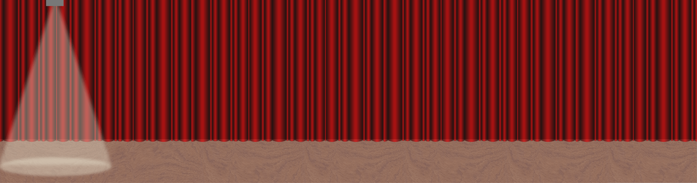
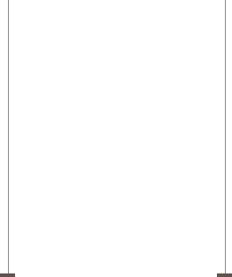
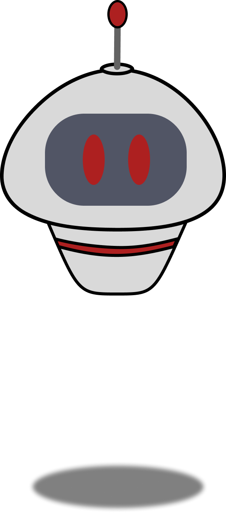

R.U.R (kort for Rossum's Universal Robots) er et tsjekkisk teaterstykke fra 1920 laget av Karel Čapek. Det er fra dette teaterstykket ordet robot kommer fra. Skuespillet handler om en fabrikk som lager menneskelignende roboter (som med nåtiden terminologi ville blitt kalt for androider). Robotene har ikke noe imot å jobbe for menneskene i starten, men etter hvert gjør robotene opprør og utsletter menneskeheten (Wikipedia, 2025). Teaterstykket har siden blitt spilt mange steder i verden. R.U.R har påvirket og formet den science fiction-sjangeren vi kjenner i dag, og teaterstykket er på mange måter hedret og har blitt referert i mange moderne filmer, serier og bøker (Standard Ebooks, u.å.).

Maybe Happy Ending er et koreansk teaterstykke som ble skrevet av Hue Park og Will Aronson. Stykket er satt litt frem i tid hvor humanoide roboter har blitt en del av folks hverdag. Vi møter robotene Oliver og Claire, som begge er forlatt av de menneskene som kjøpte dem. Etter en del tid sammen innser de at de har forelsket seg, og prøver å ha et menneskelig romantisk forhold (Wikipedia, 2025). Forestillingen vant mange priser i Korea, og har i ettertid blitt vist på Broadway i USA. Den engelske versjonen vant 6 Tony-priser (Maybe Happy Ending, u.å.).
Transformers-franchisen startet i 1984 som en leketøylinje laget av Hasbro og Takara som kunne transformere en robot til forskjellige andre former, som biler, fly, dyr og andre ting. Samme året ble det også lansert en TV-serie og tegneserie basert på leketøyene. Siden den gang har det kommet mange filmer og serier, både animert og live-action, i tillegg til at de originale karakterene fra 1984 har blitt rebootet flere ganger. Franchisen har hatt stor påvirkning på filmindustrien og har flere ganger satt nye rekorder i mest innbringende filmer (Wikipedia, 2025).
All Systems Red er den første kortromanen i serien Murderbot Diaries skrevet av Martha Wells. Novellen følger en cyborg som er med for å beskytte mennesker på et forskningsoppdrag. Cyborg har utviklet seg forbi dens programmering og har begynt å ta individuelle valg og utvikle menneskelige følelser. Den kaller seg selv for “Murderbot” (Wikipedia, 2025). Serien har 10 forskjellige verk (både romaner, kortromaner og noveller) og har vunnet mange priser, blant annet Hugo Award, Nebula Award og Locus Award (Martha Wells, u.å.).
Detroit: Become Human er et PlayStation-spill utgitt i 2018. Det er et historiedrevet oppdagelsesspill hvor man kan velge mellom å spille som tre forskjellige androider og følge deres historie, hvor spilleren tar valg underveis og påvirker hvordan historien utvikler seg. Spillet, som så mange andre underholdningsmedier, har et stort fokus på hvordan roboter studerer og får mer menneskelige personlighetstrekk og utvikler seg utenfor dens programmering. Detroit: Become Human var en av de mest solgte spillene i 2018 (Wikipedia, 2025).
Er du klar for å gå videre til neste rom? Håper du har blitt inspirert og fascinert av hvordan roboter har blitt brukt i underholdning, og så gleder jeg meg til å fortelle deg mer om alle de andre spennende tingene robotmuseet har å by på.
Trykk her hvis du er klar til å gå til neste rom.
Du vil tilbake til entréen og velge det neste rommet?
Trykk her hvis du er klar.
Er du ferdig med å utforske robotmuseet? Jeg håper du har lært masse nytt og fått et godt innblikk i robotens historie, hvordan roboter blir brukt i dag, og hva som kan skje i framtiden. Jeg skal følge deg ut av museet.
Trykk her hvis du er klar til å forlate museet.
Velkommen til underholdningsrommet her i
Robotmuseet. I dette rommet vil du kunne
utforske og lære mer om hvordan roboter
har blitt vist og brukt i underholdning opp
igjennom årene. Du vil se teaterstykker, film,
bok, og spill. Det er bare å trykke deg rundt
og utforske, så skal jeg fortelle deg om det
du er nysgjerrig på!
